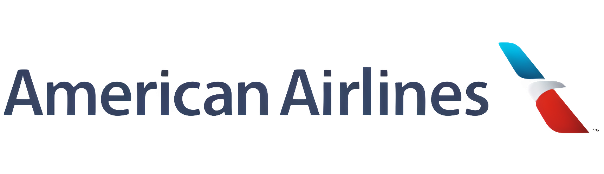

Previous Employment:
Ramp Agent | April 2022-January 2024
Previously employed as a ramp agent and crew chief at PWM marshalling flights to gates. coordinated with ground and flight crews to ensure safe and efficient aircraft loading/unloading. Tracked schedules and verified freight documentation to maintain operational accuracy. Trained new hires and operated specialized equipment while adhering to strict safety standards.